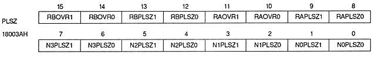

Plane size bit : Plane size bit
| N0PLSZ1, N0PLSZ0 | 18003AH | bit 1,0 | For NBG0 |
| N1PLSZ1, N1PLSZ0 | 18003AH | Bit 3, 2 | For NBG1 |
| N2PLSZ1, N2PLSZ0 | 18003AH | bits 5, 4 | For NBG2 |
| N3PLSZ1, N3PLSZ0 | 18003AH | bits 7,6 | For NBG3 |
| RAPLSZ1, RAPLSZ0 | 18003AH | bits 9,8 | Rotation parameter A For |
| RBPLSZ1, RBPLSZ0 | 18003AH | bits 13,12 | Rotation parameter B For |
| xxPLSZ1 | xxPLSZ0 | Plain size |
| 0 | 0 | 1 horizontal page x 1 vertical page |
| 0 | 1 | 2 horizontal pages x 1 vertical page |
| 1 | 0 | Setting prohibited (Do not set) |
| 1 | 1 | 2 horizontal pages x 2 vertical pages |
NB If NBG0 and NBG1 are set so that they can be reduced to 1/4, the plane size of the screen should not be 2 horizontal pages x 2 vertical pages.